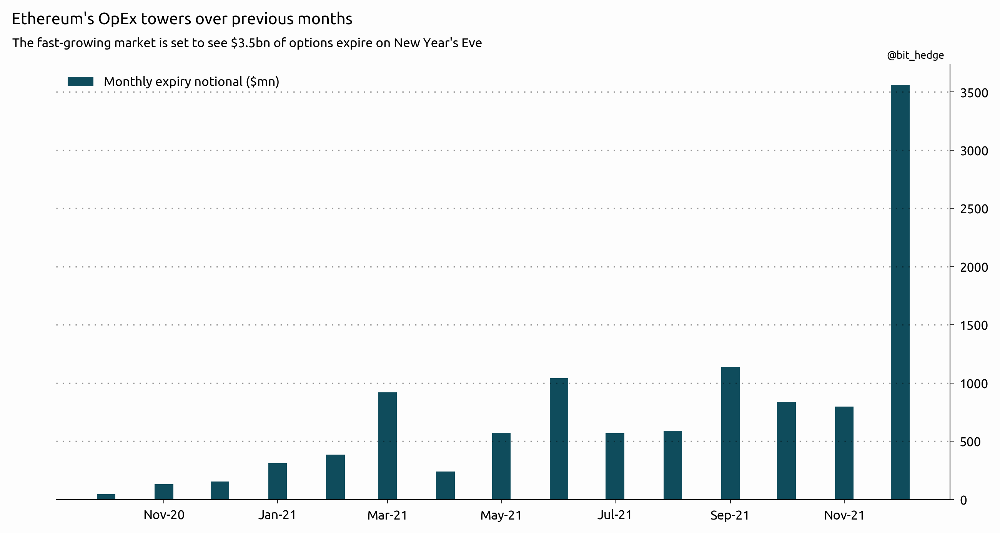

December 16th, 2021 4:36pm
Unfortunately for any crypto options market maker hoping to ring in the new year with a night out, one of the downsides to a 24/7 market is about to become very apparent as they're stuck partying with a record $9.5bn options expiry on December 31st - topping the previous high of $5.6bn seen during the raging bull market in March, when cryptos were still roaring 30% higher every month on the back of a supply shock and institutional adoption narrative gone into overdrive.
Nowhere will the celebration be more apparent than in new Wall Street darling Ethereum, where the coming expiry's notional is triple that of any previous month:
And since Eth has plans not only to become deflationary but also to slash energy consumption by 100x, some have also felt it's worth looking forward to the quarterly options in March where for the first time ever open interest on an Eth expiry has outstripped that of Bitcoin thanks almost exclusively to a *massive* buyer(s) of the 15,000 call. One has to wonder if it truly is just a single entity who has spent millions on these options, racking up the open interest to a number higher than many of the surrounding strikes combined. Is that you, Novogratz?
UBS points to the strike as a potential accelerant should Eth break out to all time highs again and indeed the position looks able to generate up to a massive $1bn in delta buying should it expire in the money - although this author happens to think that may be just a bit too optimistic and by going out just one year later, such a buyer could catch the inevitable bull market continuation when the Fed reverses course on the shortest hiking cycle in history.
But anyways, while perhaps less 'standout' from previous numbers... Bitcoin still takes the top spot for this month with what will likely be its first $6bn roll-off, which is actually half of all open interest!
For now, it seems underlying crypto markets are in general far more removed from the options process than equities (which have become largely a derivative of options positioning and real rates). But the unprecedented size of this month's unwinds combined with holiday-level liquidity means traders may be in for a fast-paced start to 2022...